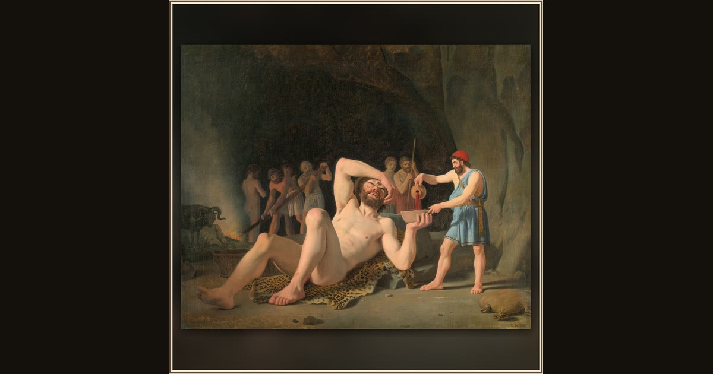

Ulysses in the Cave of Polyphemus
Constantin Hansen · 1835 · Wikimedia Commons
This Danish Golden Age scene puts you inside the cave's gloom where the escape is planned - among the very rams that will carry the men out beneath their bellies (Od. 9.216-463). Explore its place in Book IX of the Odyssey.